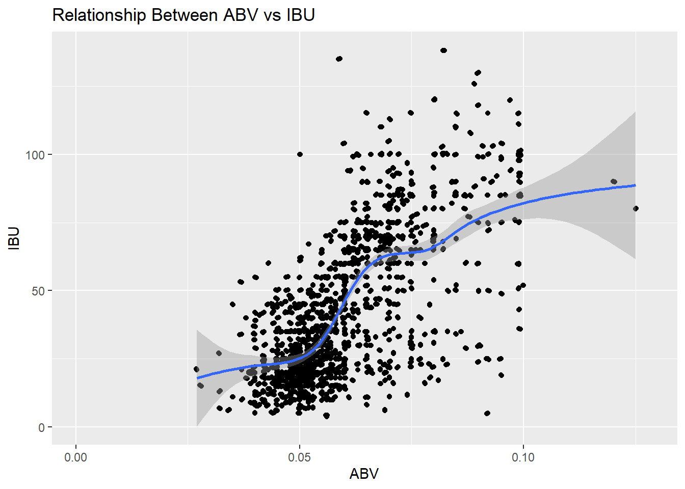
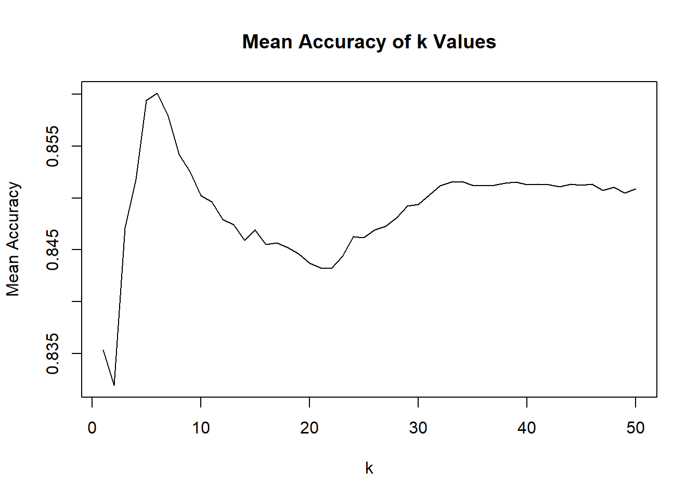
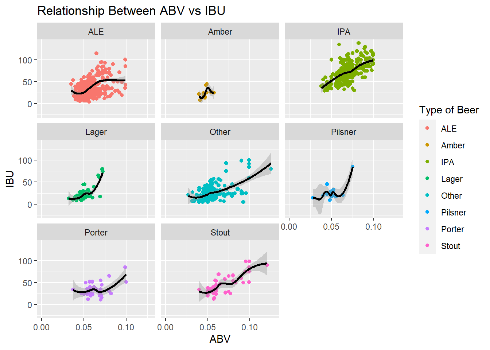

Budweiser Case Study
Kevin Boyd & Scott Frazier
10/6/2021
- Introduction
- Load Libraries
- Load in the data
- Look at the data
- Number 1 - Number of Breweries in Each State
- Number 2 - Merge the Datasets
- Number 3 - Missing Values
- Number 4a - Median ABV by State
- Number 4b - Median IBU by State
- Number 5a - Maximum ABV and IBU
- Number 5b - Top 5 States with Highest IBU
- Number 5c - Top 5 States with Highest ABV
- Number 6 - Distribution of ABV
- Number 7 - Relationship between ABV and IBU
- Number 8a - k-NN Model
- Number 8b - Find Best k Value
- Number 8c - k-NN Model with Optimized k
- Number 8d - Test ABV & IBU Contribution to Model Accuracy
- Number 9a - Interesting Relationships
- Number 9b - Median ABV and IBU by State
- Conclusion
Introduction
Our goal was to perform an EDA by identifying errors and recognizing patterns that are present in the beers and breweries data sets given to us by Budweiser. Much of the work consisted of creating visual aids to show insights from the data. We addressed the relationship between alcohol content and the bitterness using multiple plots and methods. We also utilized a k-NN model to address the relationship between ALE and IPA. As a result this EDA shows how some of the most important components of beer relate to each other.
Load Libraries
library(tidyverse)
library(RColorBrewer)
library(cowplot)
library(class)
library(caret)
library(e1071)
library(stringr)
library(maps)
library(mapproj)Load in the data
beers <- read.csv("beers.csv", header = T)
breweries <- read.csv("breweries.csv", header = T)Look at the data
str(beers)## 'data.frame': 2410 obs. of 7 variables:
## $ Name : chr "Pub Beer" "Devil's Cup" "Rise of the Phoenix" "Sinister" ...
## $ Beer_ID : int 1436 2265 2264 2263 2262 2261 2260 2259 2258 2131 ...
## $ ABV : num 0.05 0.066 0.071 0.09 0.075 0.077 0.045 0.065 0.055 0.086 ...
## $ IBU : int NA NA NA NA NA NA NA NA NA NA ...
## $ Brewery_id: int 409 178 178 178 178 178 178 178 178 178 ...
## $ Style : chr "American Pale Lager" "American Pale Ale (APA)" "American IPA" "American Double / Imperial IPA" ...
## $ Ounces : num 12 12 12 12 12 12 12 12 12 12 ...str(breweries)## 'data.frame': 558 obs. of 4 variables:
## $ Brew_ID: int 1 2 3 4 5 6 7 8 9 10 ...
## $ Name : chr "NorthGate Brewing " "Against the Grain Brewery" "Jack's Abby Craft Lagers" "Mike Hess Brewing Company" ...
## $ City : chr "Minneapolis" "Louisville" "Framingham" "San Diego" ...
## $ State : chr " MN" " KY" " MA" " CA" ...head(beers)## Name Beer_ID ABV IBU Brewery_id Style Ounces
## 1 Pub Beer 1436 0.050 NA 409 American Pale Lager 12
## 2 Devil's Cup 2265 0.066 NA 178 American Pale Ale (APA) 12
## 3 Rise of the Phoenix 2264 0.071 NA 178 American IPA 12
## 4 Sinister 2263 0.090 NA 178 American Double / Imperial IPA 12
## 5 Sex and Candy 2262 0.075 NA 178 American IPA 12
## 6 Black Exodus 2261 0.077 NA 178 Oatmeal Stout 12head(breweries)## Brew_ID Name City State
## 1 1 NorthGate Brewing Minneapolis MN
## 2 2 Against the Grain Brewery Louisville KY
## 3 3 Jack's Abby Craft Lagers Framingham MA
## 4 4 Mike Hess Brewing Company San Diego CA
## 5 5 Fort Point Beer Company San Francisco CA
## 6 6 COAST Brewing Company Charleston SCNumber 1 - Number of Breweries in Each State
#ordered plot showing counts of breweries per state
brewbystate <- breweries %>%
group_by(State) %>%
summarise(count = n()) %>%
ggplot(aes(x=reorder(State,(-count)), y = count)) +
geom_bar(stat = "identity",fill="blue") +
theme(axis.text.x=element_text(angle=90)) +
ggtitle("Number of Breweries by State") +
xlab("State") +
ylab("Count")
brewbystate + theme(axis.text.x=element_text(vjust=0.5))
Number 2 - Merge the Datasets
#merge data sets on Brewery_id
names(breweries)[1] <- "Brewery_id"
df1 <- merge(beers, breweries, by = "Brewery_id", all = T)
names(df1)[2] <- "Beer"
names(df1)[8] <- "Brewery"
str(df1)## 'data.frame': 2410 obs. of 10 variables:
## $ Brewery_id: int 1 1 1 1 1 1 2 2 2 2 ...
## $ Beer : chr "Get Together" "Maggie's Leap" "Wall's End" "Pumpion" ...
## $ Beer_ID : int 2692 2691 2690 2689 2688 2687 2686 2685 2684 2683 ...
## $ ABV : num 0.045 0.049 0.048 0.06 0.06 0.056 0.08 0.125 0.077 0.042 ...
## $ IBU : int 50 26 19 38 25 47 68 80 25 42 ...
## $ Style : chr "American IPA" "Milk / Sweet Stout" "English Brown Ale" "Pumpkin Ale" ...
## $ Ounces : num 16 16 16 16 16 16 16 16 16 16 ...
## $ Brewery : chr "NorthGate Brewing " "NorthGate Brewing " "NorthGate Brewing " "NorthGate Brewing " ...
## $ City : chr "Minneapolis" "Minneapolis" "Minneapolis" "Minneapolis" ...
## $ State : chr " MN" " MN" " MN" " MN" ...head(df1)## Brewery_id Beer Beer_ID ABV IBU Style Ounces
## 1 1 Get Together 2692 0.045 50 American IPA 16
## 2 1 Maggie's Leap 2691 0.049 26 Milk / Sweet Stout 16
## 3 1 Wall's End 2690 0.048 19 English Brown Ale 16
## 4 1 Pumpion 2689 0.060 38 Pumpkin Ale 16
## 5 1 Stronghold 2688 0.060 25 American Porter 16
## 6 1 Parapet ESB 2687 0.056 47 Extra Special / Strong Bitter (ESB) 16
## Brewery City State
## 1 NorthGate Brewing Minneapolis MN
## 2 NorthGate Brewing Minneapolis MN
## 3 NorthGate Brewing Minneapolis MN
## 4 NorthGate Brewing Minneapolis MN
## 5 NorthGate Brewing Minneapolis MN
## 6 NorthGate Brewing Minneapolis MNtail(df1)## Brewery_id Beer Beer_ID ABV IBU Style Ounces
## 2405 556 Pilsner Ukiah 98 0.055 NA German Pilsener 12
## 2406 557 Heinnieweisse Weissebier 52 0.049 NA Hefeweizen 12
## 2407 557 Snapperhead IPA 51 0.068 NA American IPA 12
## 2408 557 Moo Thunder Stout 50 0.049 NA Milk / Sweet Stout 12
## 2409 557 Porkslap Pale Ale 49 0.043 NA American Pale Ale (APA) 12
## 2410 558 Urban Wilderness Pale Ale 30 0.049 NA English Pale Ale 12
## Brewery City State
## 2405 Ukiah Brewing Company Ukiah CA
## 2406 Butternuts Beer and Ale Garrattsville NY
## 2407 Butternuts Beer and Ale Garrattsville NY
## 2408 Butternuts Beer and Ale Garrattsville NY
## 2409 Butternuts Beer and Ale Garrattsville NY
## 2410 Sleeping Lady Brewing Company Anchorage AKNumber 3 - Missing Values
#number of NAs in each data set
Beers_NAs <- sum(is.na(beers))
Brewery_NAs <- sum(is.na(breweries))
NA.df <- data.frame(Measure = c("Beers Data", "Breweries Data"),
Value = c(Beers_NAs,Brewery_NAs))
NA.dataset <- ggplot(NA.df, aes(x=Measure, y=Value)) +
geom_bar(stat = "identity", fill = "red3") +
ggtitle("Missing Data in each Dataset") +
xlab("Dataset") +
ylab("Number of NAs")
#which rows are the NAs coming from?
ABV_NAs <- sum(is.na(beers$ABV))
IBU_NAs <- sum(is.na(beers$IBU))
DataLength <- NROW(beers$ABV)
#make data frame from number of NAs
NA.df1 <- data.frame(Measure = c("ABV","IBU"),
Value = c(ABV_NAs,IBU_NAs))
#plot the NA values from each column
NA.column <- ggplot(NA.df1, aes(x=Measure, y=Value)) +
geom_bar(stat = "identity", fill = "purple2") +
ggtitle("Missing Data for ABV and IBU") +
ylab("Number of NAs") +
xlab("Column in Dataset")
#make a pie chart for ABV
NA.df2 <- data.frame(Measure = c("ABV","ABV"),
Data = c("Missing","Total"),
Value = c(ABV_NAs,(DataLength-ABV_NAs)))
bp1 <- ggplot(NA.df2, aes(x="", y=Value, fill=Data)) +
geom_bar(width = 1, stat = "identity") + xlab("") + ylab("") + ggtitle("Missing ABV Data")
pie1 <- bp1 + coord_polar("y", start=0)
pie1#make pie chart for IBU
NA.df3 <- data.frame(Measure = c("IBU","IBU"),
Data = c("Missing","Total"),
Value = c(IBU_NAs,(DataLength - IBU_NAs)))
bp2 <- ggplot(NA.df3, aes(x="", y=Value, fill=Data)) +
geom_bar(width = 1, stat = "identity") + xlab("") + ylab("") + ggtitle("Missing IBU Data")
pie2 <- bp2 + coord_polar("y", start=0)
pie2#put all the plots together
NAplots <- plot_grid(NA.dataset,NA.column,pie1,pie2, labels = c("A","B","C","D"))
NAplotsNumber 4a - Median ABV by State
#plot showing the median ABV value per state
ABV_Values <- df1 %>% group_by(State) %>%
summarize(medianABV = median(ABV, na.rm = T)) %>%
ggplot(aes(x=reorder(State,(-medianABV)), y=medianABV)) +
geom_bar(stat = "identity", fill="#377eb8") +
theme(axis.text.x=element_text(angle=90)) +
ggtitle("Median ABV Values by State") +
xlab("State") +
ylab("Median ABV Value")
ABV_Values + theme(axis.text.x=element_text(vjust=0.5))Number 4b - Median IBU by State
#plot showing the median IBU value per state
IBU_Values <- df1 %>% group_by(State) %>%
summarize(medianIBU = median(IBU, na.rm = T)) %>%
ggplot(aes(x=reorder(State,(-medianIBU)), y=medianIBU)) +
geom_bar(stat = "identity", fill="#4daf4a") +
theme(axis.text.x=element_text(angle=90)) +
ggtitle("Median IBU Values by State") +
xlab("State") +
ylab("Median IBU Value")
IBU_Values + theme(axis.text.x=element_text(vjust=0.5))## Warning: Removed 1 rows containing missing values (position_stack).Number 5a - Maximum ABV and IBU
#make data frames with top 5 ABV and IBU values
df2 <- df1[order(df1$ABV,decreasing = T),]
df2 <- df2[c(1,2,3,5,6),c(4,10)]
df3 <- df1[order(df1$IBU,decreasing = T),]
df3 <- df3[c(1:5),c(5,10)]Number 5b - Top 5 States with Highest IBU
Oregon has the highest IBU beer
#plot the top 5 states for IBU
ggplot(df3, aes(x = reorder(State, -IBU), y = IBU)) +
geom_bar(stat = "identity", fill = "#4daf4a") +
ylim(0,150) +
ggtitle("Top 5 States IBU") +
xlab("State") +
geom_text(aes(label=IBU), vjust=-1) +
ylab("IBU (International Bitterness Units)")Number 5c - Top 5 States with Highest ABV
Colorado has the highest ABV beer
#plot the top states for ABV
ggplot(df2, aes(x = reorder(State, -ABV), y = ABV)) +
geom_bar(stat = "identity", fill= "#377eb8") +
ylim(0,0.15) +
ggtitle("Top 5 States ABV") +
xlab("State") +
geom_text(aes(label=ABV), vjust=-1) +
ylab("ABV (Alcohol by Volume)")Number 6 - Distribution of ABV
The evidence suggests the distribution of ABV is right skewed with a median value of 0.056 with a mean of 0.0598. There are a number of values greater than 0.1 that make it appear to be right skewed.
#Summary stats of ABV
summary(df1$ABV)## Min. 1st Qu. Median Mean 3rd Qu. Max. NA's
## 0.00100 0.05000 0.05600 0.05977 0.06700 0.12800 62#Distributions
#Histogram of ABV in df1
df1 %>% ggplot(aes(x=ABV)) + geom_histogram(fill = "#377eb8") + ggtitle("Different ABV Values of Beer") + labs(x="ABV (Alcohol by Volume)", y="Frequency")## `stat_bin()` using `bins = 30`. Pick better value with `binwidth`.## Warning: Removed 62 rows containing non-finite values (stat_bin).#boxplot
df1 %>% ggplot(aes(x=ABV)) + geom_boxplot(fill = "#377eb8") + ggtitle("Different ABV Values of Beer") + labs(x="ABV (Alcohol by Volume)", y="") + coord_flip()## Warning: Removed 62 rows containing non-finite values (stat_boxplot).#geom_density
ABV_vizz = ggplot(df1, aes(x = ABV))
ABV_vizz + geom_density(fill = "#377eb8", alpha=0.6) +
geom_vline(aes(xintercept = mean(ABV)),
linetype = "dashed", size = 0.6,
color = "#FC4E07") +
ylab("Frequency") +
ggtitle("Different ABV Values of Beer") +
xlab("ABV (Alcohol by Volume)")## Warning: Removed 62 rows containing non-finite values (stat_density).## Warning: Removed 2410 rows containing missing values (geom_vline).Number 7 - Relationship between ABV and IBU
There is evidence of a positive relationship between ABV and IBU. We also notice that a majority of the data points are at 0.05 ABV and 35 IBU
ggplot(df1, aes(x=ABV, y=IBU)) +
geom_point() +
geom_jitter() +
geom_smooth() +
ggtitle("Relationship Between ABV vs IBU")## `geom_smooth()` using method = 'gam' and formula 'y ~ s(x, bs = "cs")'## Warning: Removed 1005 rows containing non-finite values (stat_smooth).## Warning: Removed 1005 rows containing missing values (geom_point).
## Warning: Removed 1005 rows containing missing values (geom_point).
Number 8a - k-NN Model
#Make new column with ALE, IPA, or Other as identifier
df1$Type = ifelse(grepl("\\bale\\b", df1$Style, ignore.case = T), "ALE",
ifelse(grepl("\\bipa\\b", df1$Style, ignore.case = T), "IPA", "Other"))
head(df1)## Brewery_id Beer Beer_ID ABV IBU Style Ounces
## 1 1 Get Together 2692 0.045 50 American IPA 16
## 2 1 Maggie's Leap 2691 0.049 26 Milk / Sweet Stout 16
## 3 1 Wall's End 2690 0.048 19 English Brown Ale 16
## 4 1 Pumpion 2689 0.060 38 Pumpkin Ale 16
## 5 1 Stronghold 2688 0.060 25 American Porter 16
## 6 1 Parapet ESB 2687 0.056 47 Extra Special / Strong Bitter (ESB) 16
## Brewery City State Type
## 1 NorthGate Brewing Minneapolis MN IPA
## 2 NorthGate Brewing Minneapolis MN Other
## 3 NorthGate Brewing Minneapolis MN ALE
## 4 NorthGate Brewing Minneapolis MN ALE
## 5 NorthGate Brewing Minneapolis MN Other
## 6 NorthGate Brewing Minneapolis MN Other#Make new data frame with only Ale beers
aleIPA <- df1 %>% filter(df1$Type == "ALE" | df1$Type == "IPA")
head(aleIPA)## Brewery_id Beer Beer_ID ABV IBU Style Ounces
## 1 1 Get Together 2692 0.045 50 American IPA 16
## 2 1 Wall's End 2690 0.048 19 English Brown Ale 16
## 3 1 Pumpion 2689 0.060 38 Pumpkin Ale 16
## 4 2 Citra Ass Down 2686 0.080 68 American Double / Imperial IPA 16
## 5 2 A Beer 2683 0.042 42 American Pale Ale (APA) 16
## 6 2 Flesh Gourd'n 2681 0.066 21 Pumpkin Ale 16
## Brewery City State Type
## 1 NorthGate Brewing Minneapolis MN IPA
## 2 NorthGate Brewing Minneapolis MN ALE
## 3 NorthGate Brewing Minneapolis MN ALE
## 4 Against the Grain Brewery Louisville KY IPA
## 5 Against the Grain Brewery Louisville KY ALE
## 6 Against the Grain Brewery Louisville KY ALE#Make training and test data frames
splitPerc <- .7
trainIndices <- sample(1:dim(aleIPA)[1],round(splitPerc * dim(aleIPA)[1]))
dfTrain <- aleIPA[trainIndices,]
dfTest <- aleIPA[-trainIndices,]
#Omit the NAs
dfTrain <- na.omit(dfTrain)
dfTest <- na.omit(dfTest)
#knn model
classifications <- knn(dfTrain[,4:5], dfTest[,4:5], dfTrain$Type, k = 10, prob = TRUE)
table(dfTest$Type,classifications)## classifications
## ALE IPA
## ALE 167 23
## IPA 25 79confusionMatrix(table(dfTest$Type,classifications))## Confusion Matrix and Statistics
##
## classifications
## ALE IPA
## ALE 167 23
## IPA 25 79
##
## Accuracy : 0.8367
## 95% CI : (0.7894, 0.8771)
## No Information Rate : 0.6531
## P-Value [Acc > NIR] : 1.69e-12
##
## Kappa : 0.6414
##
## Mcnemar's Test P-Value : 0.8852
##
## Sensitivity : 0.8698
## Specificity : 0.7745
## Pos Pred Value : 0.8789
## Neg Pred Value : 0.7596
## Prevalence : 0.6531
## Detection Rate : 0.5680
## Detection Prevalence : 0.6463
## Balanced Accuracy : 0.8222
##
## 'Positive' Class : ALE
## Number 8b - Find Best k Value
#Loop for many k and the average of many training / test partition
iterations = 100
numks = 50
masterAcc = matrix(nrow = iterations, ncol = numks)
for(j in 1:iterations)
{
accs = data.frame(accuracy = numeric(100), k = numeric(100))
trainIndices = sample(1:dim(aleIPA)[1],round(splitPerc * dim(aleIPA)[1]))
train = aleIPA[trainIndices,]
test = aleIPA[-trainIndices,]
train = na.omit(train)
test = na.omit(test)
for(i in 1:numks)
{
classifications = knn(train[,c(4,5)],test[,c(4,5)],train$Type, prob = TRUE, k = i)
table(classifications,test$Type)
CM = confusionMatrix(table(classifications,test$Type))
masterAcc[j,i] = CM$overall[1]
}
}
MeanAcc = colMeans(masterAcc)
plot(seq(1,numks,1),MeanAcc, type = "l", xlab = "k", ylab = "Mean Accuracy", main = "Mean Accuracy of k Values")
Number 8c - k-NN Model with Optimized k
#k-NN model using best value of k
classifications4 <- knn(dfTrain[,4:5], dfTest[,4:5], dfTrain$Type, k = 6, prob = TRUE)
table(dfTest$Type,classifications4)## classifications4
## ALE IPA
## ALE 163 27
## IPA 25 79confusionMatrix(table(dfTest$Type,classifications4))## Confusion Matrix and Statistics
##
## classifications4
## ALE IPA
## ALE 163 27
## IPA 25 79
##
## Accuracy : 0.8231
## 95% CI : (0.7746, 0.865)
## No Information Rate : 0.6395
## P-Value [Acc > NIR] : 3.426e-12
##
## Kappa : 0.6148
##
## Mcnemar's Test P-Value : 0.8897
##
## Sensitivity : 0.8670
## Specificity : 0.7453
## Pos Pred Value : 0.8579
## Neg Pred Value : 0.7596
## Prevalence : 0.6395
## Detection Rate : 0.5544
## Detection Prevalence : 0.6463
## Balanced Accuracy : 0.8062
##
## 'Positive' Class : ALE
## Number 8d - Test ABV & IBU Contribution to Model Accuracy
Both ABV and IBU allowed high accuracy in our model predicting if a beer is considered an IPA, but IBU was the best measure in the model.
#knn internal model for ABV and IBU
classifications1 <- knn.cv(dfTrain[,4:5],dfTrain$Type, k = 10)
confusionMatrix(table(classifications1,dfTrain$Type))## Confusion Matrix and Statistics
##
##
## classifications1 ALE IPA
## ALE 341 65
## IPA 28 216
##
## Accuracy : 0.8569
## 95% CI : (0.8276, 0.8829)
## No Information Rate : 0.5677
## P-Value [Acc > NIR] : < 2.2e-16
##
## Kappa : 0.7039
##
## Mcnemar's Test P-Value : 0.0001892
##
## Sensitivity : 0.9241
## Specificity : 0.7687
## Pos Pred Value : 0.8399
## Neg Pred Value : 0.8852
## Prevalence : 0.5677
## Detection Rate : 0.5246
## Detection Prevalence : 0.6246
## Balanced Accuracy : 0.8464
##
## 'Positive' Class : ALE
## #knn model for ABV
classifications2 <- knn.cv(dfTrain[,4],dfTrain$Type, k = 10)
confusionMatrix(table(classifications2,dfTrain$Type))## Confusion Matrix and Statistics
##
##
## classifications2 ALE IPA
## ALE 293 49
## IPA 76 232
##
## Accuracy : 0.8077
## 95% CI : (0.7753, 0.8373)
## No Information Rate : 0.5677
## P-Value [Acc > NIR] : < 2e-16
##
## Kappa : 0.6126
##
## Mcnemar's Test P-Value : 0.02004
##
## Sensitivity : 0.7940
## Specificity : 0.8256
## Pos Pred Value : 0.8567
## Neg Pred Value : 0.7532
## Prevalence : 0.5677
## Detection Rate : 0.4508
## Detection Prevalence : 0.5262
## Balanced Accuracy : 0.8098
##
## 'Positive' Class : ALE
## #knn model for IBU
classifications3 <- knn.cv(dfTrain[,5],dfTrain$Type, k = 10)
confusionMatrix(table(classifications3,dfTrain$Type))## Confusion Matrix and Statistics
##
##
## classifications3 ALE IPA
## ALE 328 50
## IPA 41 231
##
## Accuracy : 0.86
## 95% CI : (0.8309, 0.8858)
## No Information Rate : 0.5677
## P-Value [Acc > NIR] : <2e-16
##
## Kappa : 0.7137
##
## Mcnemar's Test P-Value : 0.4017
##
## Sensitivity : 0.8889
## Specificity : 0.8221
## Pos Pred Value : 0.8677
## Neg Pred Value : 0.8493
## Prevalence : 0.5677
## Detection Rate : 0.5046
## Detection Prevalence : 0.5815
## Balanced Accuracy : 0.8555
##
## 'Positive' Class : ALE
## Number 9a - Interesting Relationships
# make new column with beer identifiers and make into a factor
df1$New <- ifelse(grepl("\\bale\\b", df1$Style, ignore.case = T), "ALE",
ifelse(grepl("\\bipa\\b", df1$Style, ignore.case = T), "IPA",
ifelse(grepl("\\bWheat\\b", df1$Style, ignore.case = T), "Wheat",
ifelse(grepl("\\bAmber\\b", df1$Style, ignore.case = T), "Amber",
ifelse(grepl("\\bStout\\b", df1$ Style, ignore.case = T), "Stout",
ifelse(grepl("\\bLager\\b", df1$Style, ignore.case = T), "Lager",
ifelse(grepl("\\bPorter\\b", df1$Style, ignore.case = T), "Porter",
ifelse(grepl("\\bPilsner\\b", df1$Style, ignore.case = T), "Pilsner",
"Other"))))))))
head(df1)## Brewery_id Beer Beer_ID ABV IBU Style Ounces
## 1 1 Get Together 2692 0.045 50 American IPA 16
## 2 1 Maggie's Leap 2691 0.049 26 Milk / Sweet Stout 16
## 3 1 Wall's End 2690 0.048 19 English Brown Ale 16
## 4 1 Pumpion 2689 0.060 38 Pumpkin Ale 16
## 5 1 Stronghold 2688 0.060 25 American Porter 16
## 6 1 Parapet ESB 2687 0.056 47 Extra Special / Strong Bitter (ESB) 16
## Brewery City State Type New
## 1 NorthGate Brewing Minneapolis MN IPA IPA
## 2 NorthGate Brewing Minneapolis MN Other Stout
## 3 NorthGate Brewing Minneapolis MN ALE ALE
## 4 NorthGate Brewing Minneapolis MN ALE ALE
## 5 NorthGate Brewing Minneapolis MN Other Porter
## 6 NorthGate Brewing Minneapolis MN Other Otherdf1$New <- as.factor(df1$New)
str(df1)## 'data.frame': 2410 obs. of 12 variables:
## $ Brewery_id: int 1 1 1 1 1 1 2 2 2 2 ...
## $ Beer : chr "Get Together" "Maggie's Leap" "Wall's End" "Pumpion" ...
## $ Beer_ID : int 2692 2691 2690 2689 2688 2687 2686 2685 2684 2683 ...
## $ ABV : num 0.045 0.049 0.048 0.06 0.06 0.056 0.08 0.125 0.077 0.042 ...
## $ IBU : int 50 26 19 38 25 47 68 80 25 42 ...
## $ Style : chr "American IPA" "Milk / Sweet Stout" "English Brown Ale" "Pumpkin Ale" ...
## $ Ounces : num 16 16 16 16 16 16 16 16 16 16 ...
## $ Brewery : chr "NorthGate Brewing " "NorthGate Brewing " "NorthGate Brewing " "NorthGate Brewing " ...
## $ City : chr "Minneapolis" "Minneapolis" "Minneapolis" "Minneapolis" ...
## $ State : chr " MN" " MN" " MN" " MN" ...
## $ Type : chr "IPA" "Other" "ALE" "ALE" ...
## $ New : Factor w/ 8 levels "ALE","Amber",..: 3 8 1 1 7 5 3 5 8 1 ...#plot each beer ABV and IBU individually
ggplot(df1, aes(x=ABV, y=IBU, color=New)) +
geom_point() +
geom_jitter() +
geom_smooth(color="black") +
ggtitle("Relationship Between ABV vs IBU") +
labs(color="Type of Beer") +
facet_wrap(~New)## `geom_smooth()` using method = 'loess' and formula 'y ~ x'## Warning: Removed 1005 rows containing non-finite values (stat_smooth).## Warning: Removed 1005 rows containing missing values (geom_point).
## Warning: Removed 1005 rows containing missing values (geom_point).
#boxplot for ABV of each beer
p1 <- ggplot(df1, aes(x=New, y=ABV, fill=New)) +
geom_boxplot() +
ggtitle("Relationship Between Kind of Beer and ABV") +
xlab("Type of Beer") +
theme(legend.position="none")
p1## Warning: Removed 62 rows containing non-finite values (stat_boxplot).#boxplot for IBU of each beer
p2 <- ggplot(df1, aes(x=New, y=IBU, fill=New)) +
geom_boxplot() +
ggtitle("Relationship Between Kind of Beer and IBU") +
xlab("Type of Beer") +
theme(legend.position="none")
p2## Warning: Removed 1005 rows containing non-finite values (stat_boxplot).Number 9b - Median ABV and IBU by State
#make the data frame to plot
df3.ABV <- df1 %>% group_by(State) %>%
summarize(medianABV = median(ABV, na.rm = T))
df3.IBU <- df1 %>% group_by(State) %>%
summarize(medianIBU = median(IBU, na.rm = T))
df4 <- cbind(df3.ABV,df3.IBU)
df4 <- df4[,-3]
colnames(df4)[1] <- "abb"
df4 <- df4[-8,]
lookup = data.frame(abb = state.abb, State = state.name)
df5 <- lookup[order(lookup$abb),]
df6 <- cbind(df4,df5)
df6$region <- tolower(df6$State)
df7 <- df6[,-c(1,4,5)]
#make map df
states <- map_data("state")
map.df1 <- merge(states,df7, by="region", all.x=T)
map.df1 <- map.df1[order(map.df1$order),]#ABV heat plot
ggplot(map.df1, aes(x=long,y=lat,group=group)) +
geom_polygon(aes(fill=medianABV)) +
geom_path() +
scale_fill_gradientn(colours=rev(heat.colors(10)),na.value="grey90") +
ggtitle("Median ABV by State") +
labs(fill="Median ABV") +
coord_map()#IBU heat plot
ggplot(map.df1, aes(x=long,y=lat,group=group)) +
geom_polygon(aes(fill=medianIBU)) +
geom_path() +
scale_fill_gradientn(colours=rev(heat.colors(10)),na.value="grey90") +
ggtitle("Median IBU by State") +
labs(fill="Median IBU") +
coord_map()Conclusion
Based on our visualizations and insights, we concluded that there does appear to be evidence of a positive relationship between ABV and IBU. We were able to accuratly identify if a beer was an ale or an IPA based specifically on those metrics. We also observed similar distributions of ABV and IBU between different subgroups of beer.